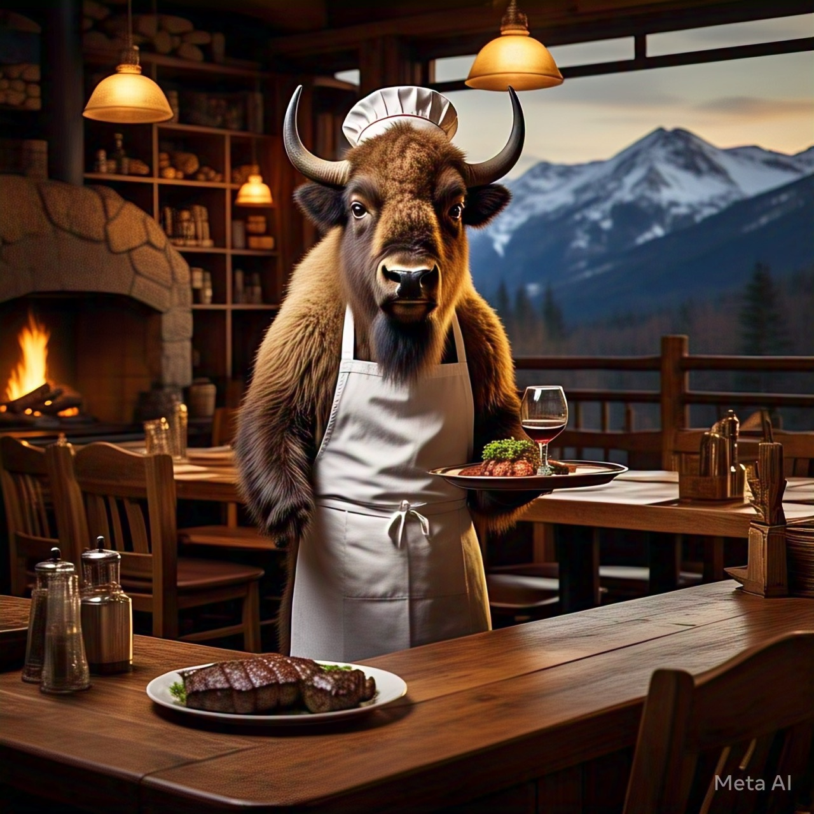
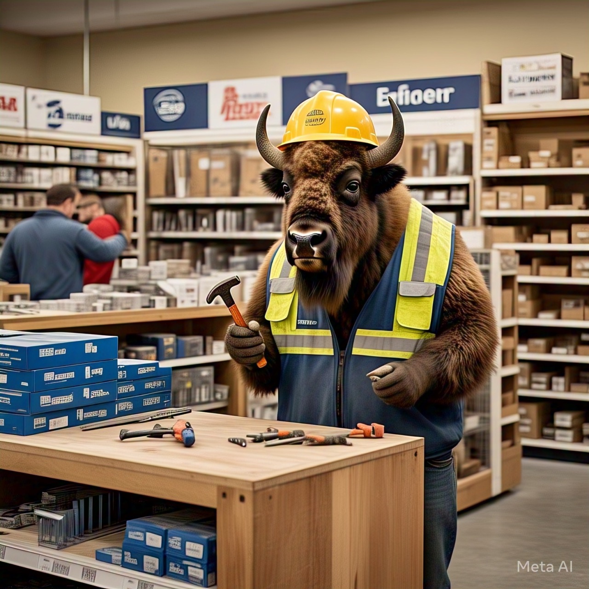

Welcome to the Heart of Bison County
Connecting businesses and fostering economic growth.
Current Weather
Business Spotlight

Featured Business: Bison County Cafe
Serving the best coffee and pastries in town.

Featured Business: Bison County Hardware
Your one-stop shop for all your hardware needs.